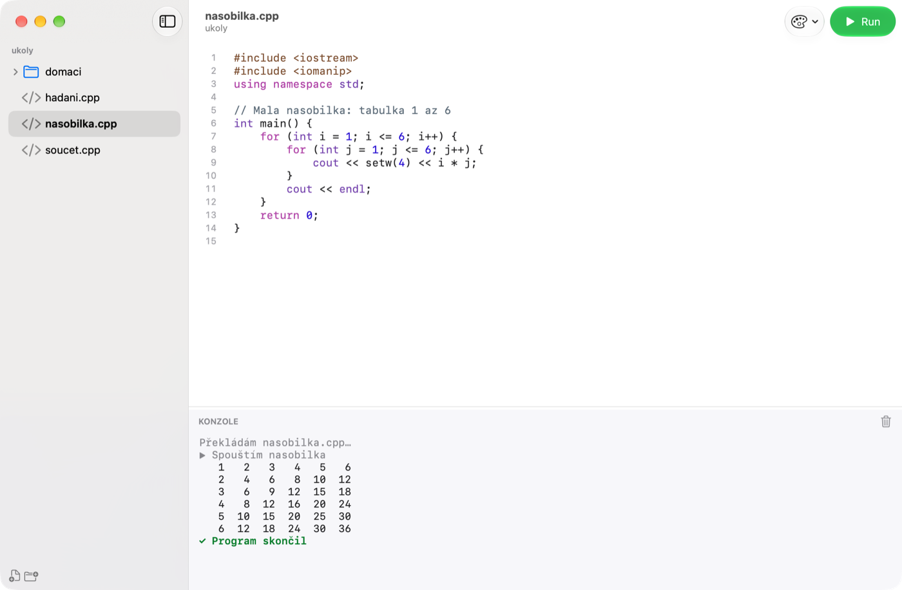
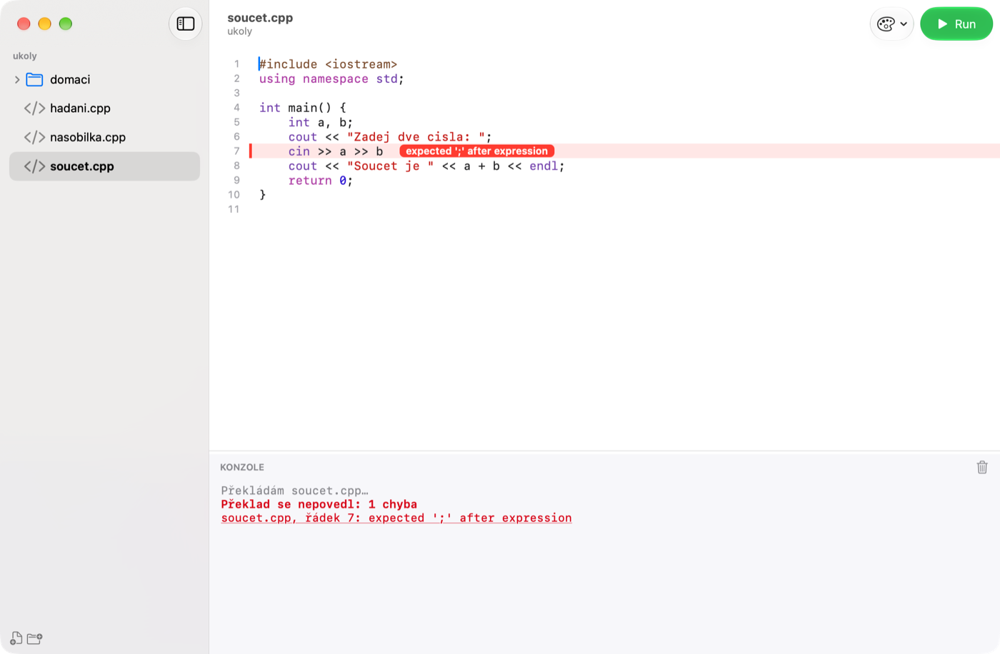

Začínáme
- Stáhni obraz disku ze stránky ke stažení a otevři ho.
- Přetáhni Cecko do složky Aplikace a spusť ho odtamtud.
- Při prvním spuštění klikni na Vybrat složku… a vyber složku, ve které máš své programy v C++. Cecko jí říká kořenová složka, ukazuje její soubory vlevo a příště ji otevře znovu.
Jinou složku vybereš kdykoli v menu Soubor › Změnit kořenovou složku….
Hlavní okno

1 2 3 4 5- 1Průzkumník
- Soubory a složky kořenové složky. Kliknutím soubor otevřeš.
- 2Editor
- Otevřený soubor s barevným zvýrazněním C++ a čísly řádků. Enter zachová odsazení, závorky a uvozovky se uzavírají samy, ⌘F hledá a nahrazuje.
- 3Run
- Přeloží a spustí otevřený program. Dokud program běží, tlačítko se mění na Stop.
- 4Vzhled
- Přepíná mezi čtyřmi vzhledy (viz Vzhledy).
- 5Konzole
- Co program vypisuje, co do něj píšeš a hlášky kompilátoru. Tažením čáry nad ní ji zvětšíš nebo zmenšíš; ikonou koše ji vymažeš.
Spuštění programu
Klikni na Run nebo stiskni ⌘R. Cecko soubor uloží, přeloží ho kompilátorem C++ na tvém Macu a spustí v konzoli. Každý soubor .cpp je samostatný program a potřebuje vlastní main.
Když program čte vstup (cin, scanf), objeví se dole v konzoli řádek pro vstup. Napiš hodnotu a stiskni Enter. ⌃D ukončí vstup, stejně jako v Terminálu.
Stop (⌘.) ukončí program, který se zasekl nebo běží donekonečna. Na konci konzole napíše, jak program skončil: normálně, s jiným návratovým kódem než 0, nebo pádem, třeba segmentation fault.
Vkládání cyklů a podmínek
Klikni v editoru pravým tlačítkem a zvol Vložit. Konstrukce se vloží tam, kam jsi klikl, se správným odsazením, a část, kterou obvykle měníš jako první (podmínka, počet opakování, název), je už označená, takže ji rovnou přepíšeš.
- Cykly:
for,forpřes všechny prvky kontejneru,while,do-while. - Podmínky:
if,if-else,if – else if – else,switch. - Další: funkce, načtení vstupu (
cin), výpis výstupu (cout). V souborech.cse místo nich použijescanfaprintf.
Když klikneš doprostřed řádku, konstrukce se vloží na vlastní řádky. ⌘Z vložení vrátí.
Chyby při překladu

1 2Když se program nepřeloží, řádek s chybou se zvýrazní a vedle něj se ukáže hláška kompilátoru (1). Hlášky jsou původní, od kompilátoru, a proto anglicky. Konzole je vypíše všechny (2); kliknutím na hlášku skočíš na její řádek. Varování jsou žlutá a spuštění programu nebrání.
Soubory a složky
Ukládat nemusíš: Cecko zapíše změny vteřinu poté, co přestaneš psát, a vždy před spuštěním. ⌘S uloží hned, pokud si chceš být jistý.
- Soubor › Nový soubor (⌘N) vytvoří
program.cpps prázdnýmmain, připravený k doplnění. - Soubor › Nová složka (⇧⌘N) vytvoří složku. Obě akce jsou i dole pod průzkumníkem.
- Pravým kliknutím na soubor nebo složku je přejmenuješ, ukážeš ve Finderu nebo přesuneš do koše.
- Změny udělané v jiných aplikacích se ukážou samy.
- Soubory z Code::Blocks na Windows se otevřou se správnou českou diakritikou a uloží se zpět stejně; funguje i
#include <bits/stdc++.h>. - Soubor
.cppz Finderu otevřeš volbou Otevřít v aplikaci › Cecko nebo přetažením na Cecko v Docku. Jeho složka se stane kořenovou.
Vzhledy
Vzhled vybereš tlačítkem s paletou v nástrojové liště nebo v menu Zobrazení › Vzhled. Cecko si ho zapamatuje. Výchozí je Glass: čistý, s Liquid Glass, světlý nebo tmavý podle macOS.


Příkaz cecko
Zvol Cecko › Instalovat příkaz „cecko“… a zadej heslo k Macu. Pak příkaz cecko . v Terminálu otevře aktuální složku v Cecku a cecko soubor.cpp otevře soubor.
Když chybí kompilátor
 1
1
Cecko používá bezplatné vývojářské nástroje od Applu (Command Line Tools). Když nejsou nainstalované, nad editorem se objeví pruh a Run nejde použít. Klikni na Instalovat vývojářské nástroje, potvrď dialog Applu a počkej na stažení (pár minut). Pak klikni na Zkontrolovat znovu.
Klávesové zkratky
- ⌘R
- Spustit otevřený program
- ⌘.
- Zastavit běžící program
- ⌃D
- Ukončit vstup programu
- ⌘K
- Vymazat konzoli
- ⌘F
- Hledat a nahradit v souboru
- ⌘N / ⇧⌘N
- Nový soubor / nová složka
- ⇧⌘O
- Změnit kořenovou složku
- ⌘S
- Uložit hned
Aktualizace
Při každém spuštění se Cecko podívá, jestli existuje novější verze, a pokud ano, nabídne ji; bez tvého souhlasu se nic nenainstaluje. Cecko › Vyhledat aktualizace… se zeptá hned.